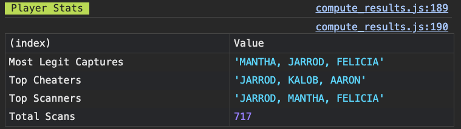

I made a real world game using Raspberry Pi’s, NFC readers, LED strips, and Supabase. The goal of the game is to capture and hold and many capture points as you can, stealing them back from other players, and sneaking off the gain control for your team.
It doesn't require any phones to play, and keeps players engaged in the real world.
Contents
The Game
“Multi Hill King of the Hill” / “Control Points” is the best one phrase explainers I’ve found so far. The goal is to capture areas for your team by swiping your NFC card at the control point.
A friend of mine runs a small music fest, and uses LEDs distributed around a campground to provide atmospheric lighting for the event. I thought some cool interactive games could be created using this setup.
I wanted to make a game, that takes place in the real world involving no phones or other devices.
An optional scoreboard can then display captured areas as well as a leaderboard.

The Tech
Each node / "hill" consists of:
- Raspberry Pi 3B+
- WS2182 Light Strip
- RC522 NFC Reader / Writer
I love working with Raspberry Pi as I enjoy working in strong, well-trodden ecosystems. They are often overkill for projects, but its great to continue working in a familiar Linux environment.

I built this version in NodeJS, with the help of some awesome packages, namely node-rpi-ws281x-native and mfrc522-rpi.
Each card has a hex-encoded string written to it that decodes to something like `B-taco`. The first letter being the team, and second being the player's code name.
When a scan happens the Pi debounces the scan event (as they can happen in quick succession) and then shoots up the data to a Supabase project with a few endpoints. A lot of fun insights can be derived from the data, see the playtest below for what I pulled out.
Game sessions, node assignment, and project endpoints can be managed via a super rough dashboard I slapped together. I enjoyed working framework free and keeping it as barebones as possible.
The scoreboard page uses Supabase Realtime to provide instant updates to the capture state of each node, as well as keep the leaderboard up to date.
Playtest
I was planning to have a get-together with my friends in an Airbnb, and I realized that would be perfect opportunity to try out the game!
Teaching
I didn’t get a representative experience of introducing the game to players as all involved were close friends and more or less taught each other. However I did learn a few things:
- Show Don't Tell: All the words in the world didn’t compare to swiping a card and seeing the color on the point change. The actual demo following by a suggestion of how to be competitive got people interesting and playing right away.
- Personally Relevant Goals First: Intially, I started introducing the team goals like holding the point for your team and total capture time. But quickly I realized players cared more about their personal actions and contributions, so I started introducing that first. I’m still personally interested in the team aspect so I’ll likely spend time juicing the experience of contributing to one’s team with team leaderboards and other stats.
Player Feedback
I got tons of great feedback as I discussed with players, each had their different play styles and focused on different parts of the game.
- Desire for Leaderboard: Universally, all players wanted to see who had the scans. Initially the scoreboard only showed which team held each point. Much like a competitive online game, team progress is great but players want to see their own points. Implementing the leaderboard was the only change I made over the course of the weekend.
- Lockout Time: “Steals” happened pretty frequently. Players would capture a point, and then another competitive player would sneak up right behind them and recapture the point. Several players brought up that a lockout time would feel better, so their progress wouldn’t immediately be wiped away. I like this idea, but will likely implement it with a light touch as not to discourage the highly engaged stealing players.
- Genuine Product Direction from Players: Gathering feedback from players was very gratifying and stimulating for me. Being on the ground with players having discussions and combined with the agency to make any changes I felt necessary was a beautiful taste of true user focused design.
Parsing Data
A few days after the game was complete I parsed out all the scan events to determine the winner, as well as some interesting stats!

Team based stats were less interesting in this playtest, but I think with the right visiblity team based play could be made really fun for players.
Next Steps
As I have time I want to polish the game, to make it as beautiful a process as possible, moreso than expanding with new features. Here are a few things that I've been ruminating on:
Improvements
- Local server support There's not really a need to a central online server, I could instead use a command node and keep the game local to the network.
- Use GUIDs + registration flow to remove the need to burn cards Currently each card must be burnt with a team code and player name, just use the built in GUIDs instead and register each card to a user name.
- Add lock out time with visual indication As mentioned, prevent instant steals from watchful players. There's opportunity for a high afforance design, gradually fading into the new colors.
- Control external API providing lights To control a larger universe of lights, have a local command node find and set lighting for node zones.
- Shrink nodes from Pi to ESP32 Raspberry Pi is super duper overkill for these little scanner nodes.
- Prevent Partial Scans Sometime I recieved partial scans from the NFC cards. I'm not sure why this happens but there ways to check for and prevent this.
Takeaways
- Rediscovering playground mentalities The childlike playground mentality is essential when thinking about and explaining games. It took a minute to get back into but I loved living in that space during the playtest. Intially the game was called "Lumi" but "CaptureTag" (as suggested by my friend Tim) explains itself and communicate the correct level of anti-serious playfulness.
- Competing for Most Scans is Fun Players talked the most about on upping each other, and loved seeing their numbers go up!
- Players Lose Cards Be able to ready to make backups :)
- Prevent Burn In When displaying the leaderboard on a TV, have tools to prevent burnin, such as a slight wiggle and dark mode.
Thanks for Reading!
Creating an physical game with the tools of my incredibly virtual trade was very gratifying. I'm excited to continue into the realm of less productized tech.